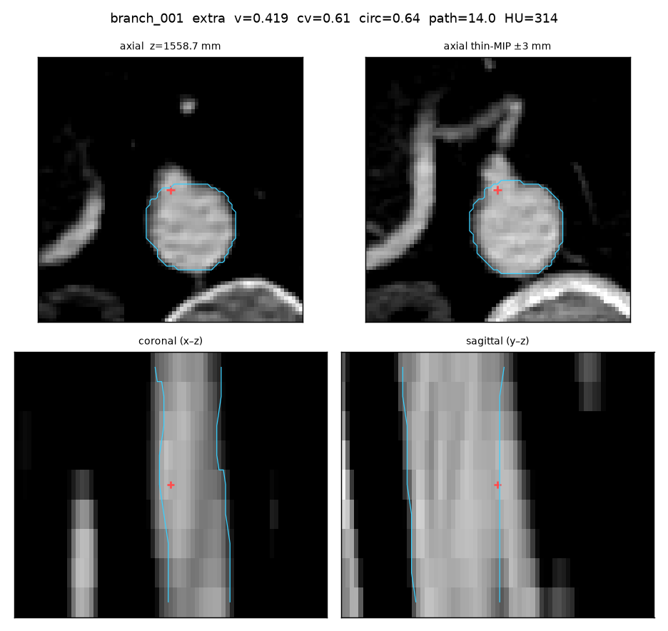
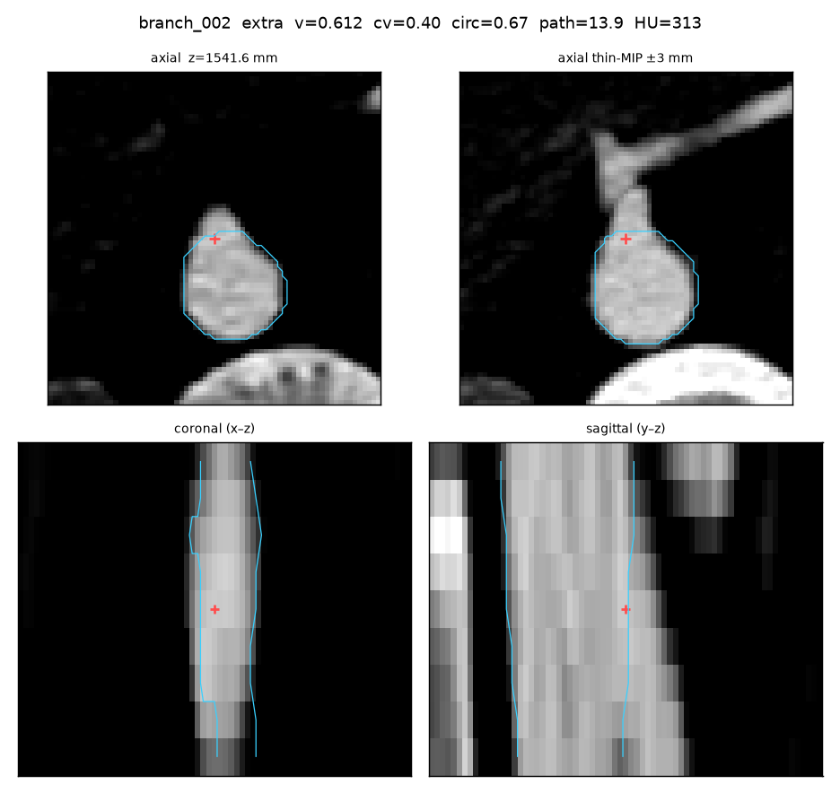
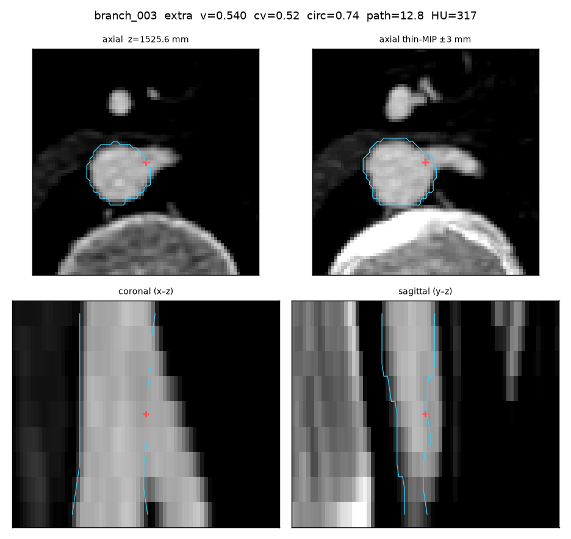
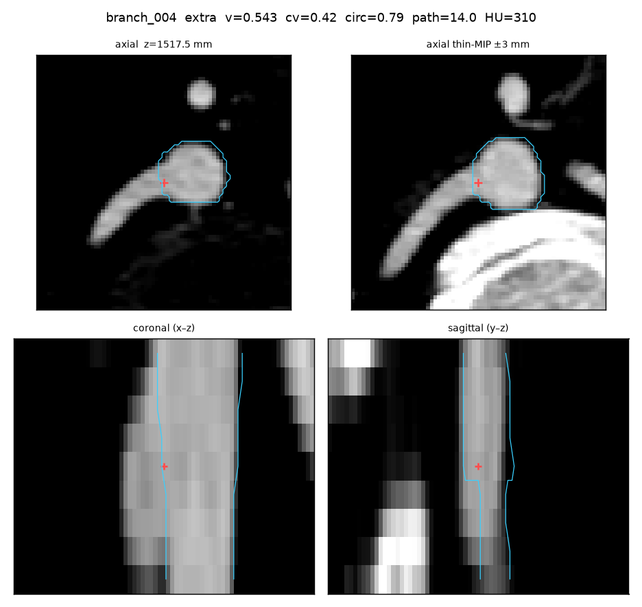
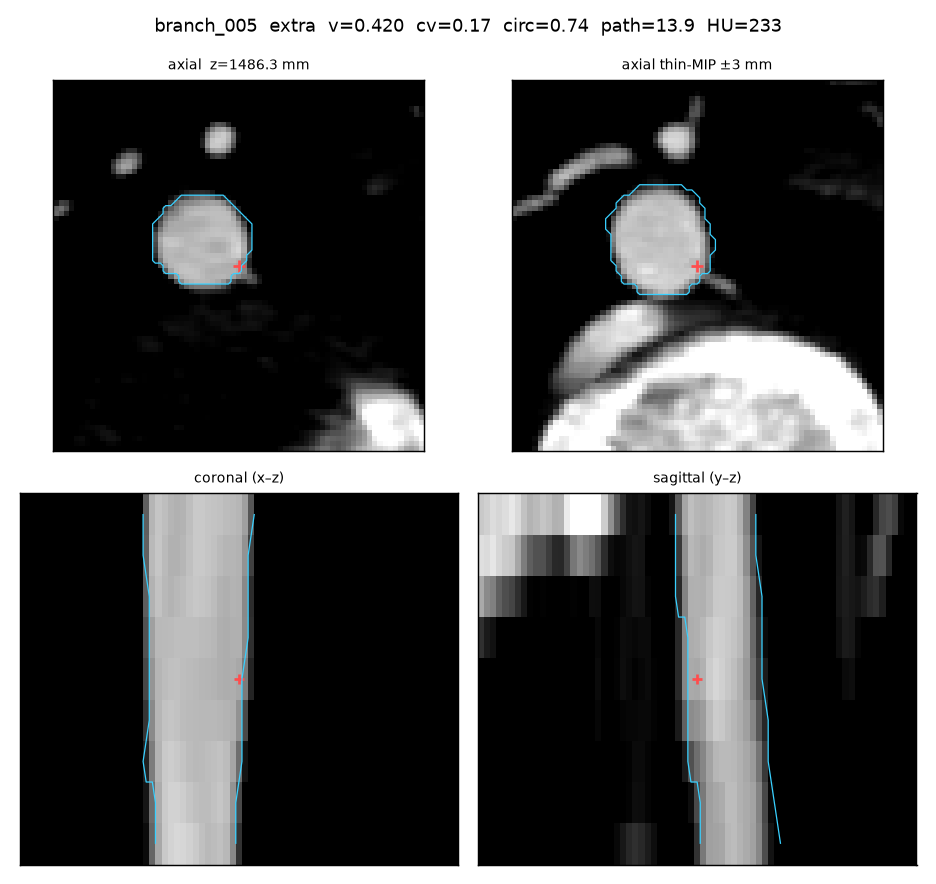
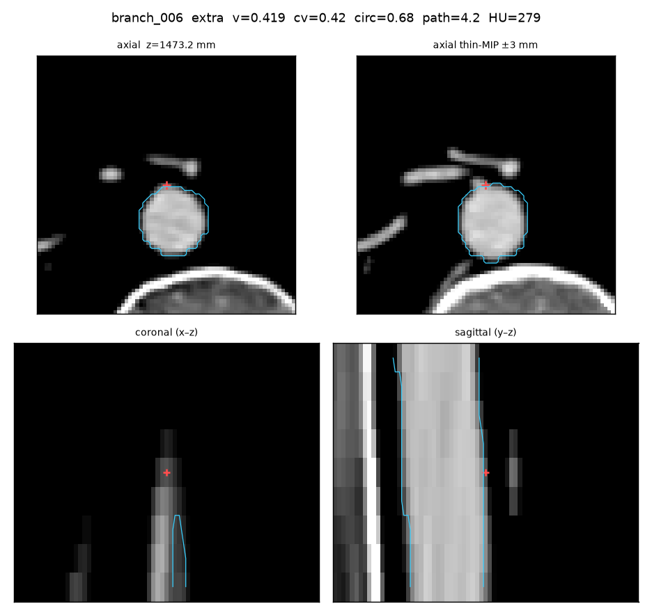
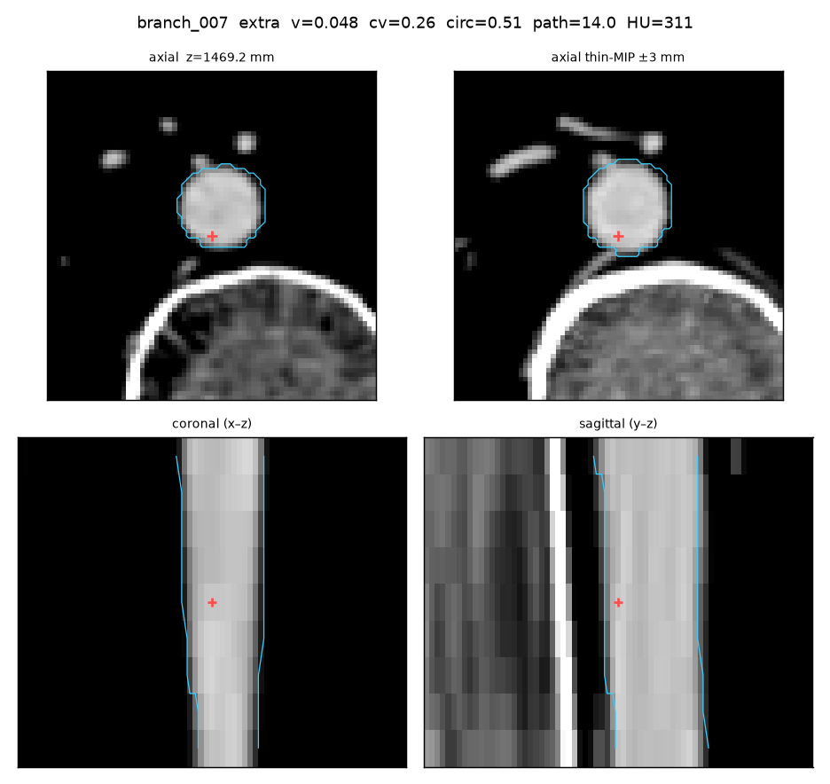
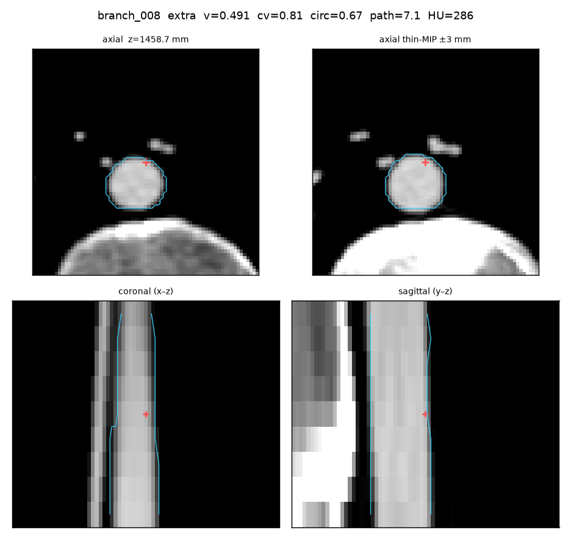

branch_001 extra
gt=— err=— z=1558.74 r=1.6555
- vesselness 0.4187
- radius_cv 0.6145
- circularity 0.6355
- path_mm 14.0
- mean_HU 314.0

gt=— err=— z=1558.74 r=1.6555

gt=— err=— z=1541.64 r=1.6579

gt=— err=— z=1525.58 r=1.5041

gt=— err=— z=1517.46 r=2.504

gt=— err=— z=1486.31 r=0.7864

gt=— err=— z=1473.19 r=1.3485

gt=— err=— z=1469.22 r=1.6448

gt=— err=— z=1458.68 r=1.2192
